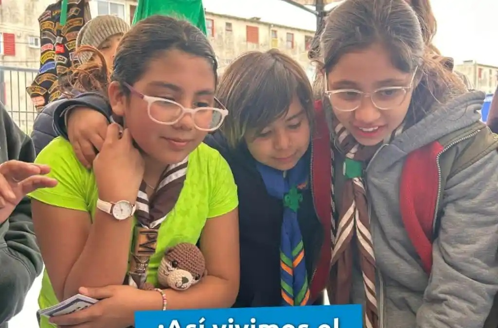

Octubre 2026 - Interweb
¡Vivimos una nueva edición del JOTA-JOTI 2026! 🎙️
El pasado fin de semana viernes 16 y sábado 17 de octubre, el Jamboree en el Aire y en Internet conectó a miles de scouts de todo el país y del mundo, en una experiencia inolvidable.
⛺✨💻 La gran apertura desde Casa Scout:
El viernes comenzamos con la transmisión en vivo de la apertura mundial del evento, junto a invitados muy especiales: nuestra Presidenta y Jefa Scout Nacional, Luján Peciña @lujanpeci;